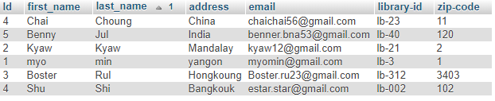
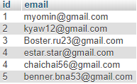
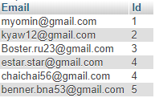
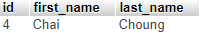
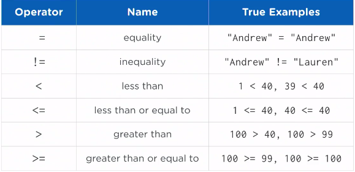
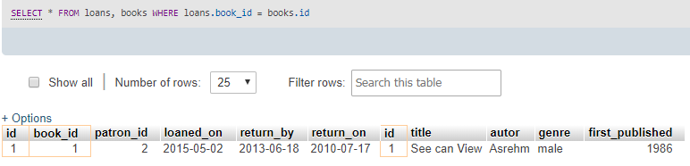

What You'll Learn
Why This Course_
ကျွန်တော်တို့ဒီသင်ခန်းစာမှာတော့ database တွေအကြောင်းကိုလေ့လာသွားမှာဖြစ်ပါတယ်။SQL တွေ SQL basic အကြောင်းတွေကိုပိုပြီးလေ့လာသွားမှာဖြစ်ပြီးတော့ database တွေကနေ information တွေကိုရယူဖို့အတွက် specialized ပြုလုပ်ထားတဲ့ programming Language ပဲဖြစ်ပါတယ်။mobile တွေ web development jobs တွေကနေ technical marketing တွေ business analyst role တွေအထိ careers တွေအများကြီးပြီးတဲ့နောက်မှာ sql တွေရေးတဲ့ skill ကပိုပြီးမြင့်မားပါတယ်။ကျွန်တော်တို့တွေက dynamic web applications တွေ ကျွန်တော်တို့ marketing campaigns တွေကိုဘယ်လိုသတ်ရောက်မယ်ဆိုတာတွေကိုဆုံးဖြတ်ဖို့ အတွက်ကူညီတဲ့ custom reports တွေကို run တာတွေကိုတည်ဆောက်နိုင်ပါတယ်။နောက်ပြီးကျွန်တော်တို့က database က Information တွေကို searching သို့မဟုတ် querying ပြုလုပ်ခြင်း process တွေပြုလုပ်ဖို့အထူးပြုထားတာတွေကိုကျွန်တော်တို့လေ့လာရမှာပဲဖြစ်ပါတယ်။
Data is Everywhere
Database ဆိုတာကတော့နေရာတိုင်းမှာရှိတဲ့အရာတိုင်းဖြစ်နိုင်ပါတယ်။ကျွန်တော်တို့နေ့စဉ်အသုံးပြုနေတဲ့ websites တွေ mobile app တွေမှာ data တွေကိုမောင်းနှင်ထားတာပဲဖြစ်ပါတယ်။ဥပမာ Netflix တွေနဲ့ Hulu တွေမှာ နောက်တစ်ခုကဖော်ပြမယ့် show သို့မဟုတ် movie တွေမှာ service ဘယ်လိုပြုလုပ်တယ်ဆိုတာတွေဖြစ်ပါတယ်။တကယ်တော့အဲ့တာတွေက database ကိုအသုံးပြုပြီးတော့ပြုလုပ်ထားတာပဲဖြစ်ပါတယ်။နောက်ပြီးကျွန်တော်တို့က data ဆိုတာဘာလဲဆိုတာကိုနားလည်ထားရပါမယ်။real world object တွေမှာ data တွေနဲ့ဘယ်လိုချိတ်ဆက်နေတယ်ဆိုတာ တွေကိုဖော်ပြတာတွေကိုလည်းသိထားရမှာပဲဖြစ်ပါတယ်။ကျွန်တောတို့အလုပ်လုပ်နေတဲ့လူတစ်ချို့ရဲ့စားပွဲတွေပေါ်မှာ rotary card file ဆိုတဲ့နာမည်တွေကိုရေးမှတ်တဲ့စာအုပ်ဖိုင်လေးကိုမြင်ဘူးပါလိမ့်မယ်။အဲ့တာတွေကကျွန်တော်တို့ contact information တွေကိုမှတ်ဖို့အတွက်အများဆုံးအသုံးပြုတာပဲဖြစ်ပါတယ်။contacts တွေက alphabetically အရစီစဉ်ပြီးတော့အရေးကြီးတဲ့ information တွေကို store ပြုလုပ်ထားတာပဲဖြစ်ပါတယ်။ဥပမာ person name တွေ phone number တွေ address တွေစတာတွေပဲဖြစ်ပါတယ်။အဲ့တာတွေကကျွန်တော်တို့လိုအပ်တဲ့အချိန်မှာ update ပြုလုပ်တာတွေ delete ပြုလုပ်တာတွေကိုပြုလုပ်နိုင်ပါတယ်။Information တွေကတော့ data တွေပဲဖြစ်ပါတယ်။ကျွန်တော်တို့ ဥပမာပြောခဲ့တဲ့ rotary file ကတော့ data တွေကိုသိမ်းဖို့အတွက် database တစ်ခုဖြစ်ပြီးတော့ computerized ဖြစ်တာတော့မဟုတ်ပါဘူး။ ကျွန်တော်တို့ ဒီသင်ခန်းစာမှာတော့ computerized database တွေရဲ့ fundamentals တွေကိုနားလည်ဖို့အတွက်နဲ့ အဲ့တာတွေရဲ့အတွင်းထဲမှာရှိတဲ့ structure တွေကိုလေ့လာသွားမှာပဲဖြစ်ပါတယ်။အရေးအကြီးဆုံးကတော့ database ရဲ့အပြင်မှာ information တွေကိုဘယ်လို retrieve ပြုလုပ်တယ်ဆိုတာကိုလေ့လာရမှာပဲဖြစ်ပါတယ်။Amazon site မှာတော့သူတို့ရဲ့ရောင်းမဲ့ products တွေအတွက် data တွေ information တွေကို database ကိုအသုံးပြုပြီးတော့သိမ်းထားတာပဲဖြစ်ပါတယ်။နောက်ပြီး shipping တွေ billing addresses တွေနဲ့ customer payment information တွေကဲ့သို့သော customer order information အသေးစိတ်တွေကိုလည်း store ပြုလုပ်ထားပေးပါတယ်။facebook မှာလည်းပဲ user friendships တွေ likes တွေ private message တွေ post တွေအတွက် information တွေအကုန်လုံးကို store ပြုလုပ်ထားတာပဲဖြစ်ပါတယ်။websites တွေတိုင်းလိုလိုမှာ data တွေ information တွေကို store ပြုလုပ်ဖို့ database တွေကိုအသုံးပြုကြပါတယ်။
Talking to Databases with SQL
ကျွန်တော်တို့ database တွေကဘယ်လိုအလုပ်လုပ်တယ်ဆိုတဲ့အခြေခံတွေကိုနားလည်ပြီးဖြစ်ပါတယ်။data တွေ database တွေကကျွန်တေ်ာတို့ရဲ့အလုပ်တွေ အသုံးပြုသူတွေရဲ့အရေးကြီးတဲ့ question တွေကိုမေးတဲ့အခါမှာကူညီပါလိမ့်မယ်။ဥပမာ marketing တွေမှာဆိုရင် marketer တစ်ယောက်ကိုကျွန်တေ်ာတို့က အရင်လကမတူညီတဲ့ campaigns တွေဘယ်လိုလုပ်ဆောင်သလဲဆိုတာကိုသိလိုတယ်ဆိုရင်ကျွန်တာ်တို့က marketing blog မှာသွားပြီး search engine marketing တွေကိုအသုံးပြုပြီးရှာပါလိမ့်မယ်။နောက်ထပ်ကျွန်တေ်ာတို့က book editor တစ်ယောက်ဖြစ်ပြီးတော့ large publishing company မှာအလုပ်လုပ်တယ်ဆိုရင်နောက်ပြီး ebooks တွေအတွက်ကျွန်တော်တို့ရဲ့ views တွေကို retrieve ပြုလုပ်ချင်တယ်ဆိုရင်ကျွန်တော်တို့က rating တွေပေါ်မှာကြည့်ပြီးတော့ဆုံးဖြတ်နိုင်ပါတယ်။ကျွန်တော်တို့က database ရဲ့အပြင်မှာရိှတဲ့ information တွေကိုလိုချင်တယ်ဆိုရင်SQL လို့ခေါ်တဲ့ကောင်းမွန်စွာထောက်ပံ့ပေးနိုင်တဲ့ programming language ကိုအသုံးပြုဖို့လိုအပ်ပါတယ်။ကျွန်တော်တို့ sQL ဆိုတာကိုတော့မကြာခနကြားဘူးနေပါလိမ့်မယ်။သူ့ရဲ့အရှည်ကတော့ Structured Query Language ဆိုတာပဲဖြစ်ပါတယ်။database ကနေ data တွေကို reading လုပ်တာကို querying လို့သိထားရပါမယ်။SQL ကိုနားလည်တဲ့ database တွေအများကြီးရှိပါတယ်။ဥပမာ MySQL, PostgreSQL, MS SQL, Oracle နဲ့ SQLite စတာတွေပဲဖြစ်ပါတယ်။အဲ့ဒီ database တစ်ခုဆီက SQL programming language ကိုသုံးပြီးတော့ read တွေ queried တွေလုပ်နိုင်တာပဲဖြစ်ပါတယ်။နောက်ပြီးအခြား database type တွေလည်းရှိပြီးတော့ ပိုပြီးတော့ specialized ဖြစ်တဲ့ methods တွေကိုအသုံးပြုနိုင်တာပဲဖြစ်ပါတယ်။အဲ့တာတွေကတော့ MongoDB, CouchBase and Redis စတာတွေပဲဖြစ်ပါတယ်။အဲ့တာတွေက NoSQL Databases တွေဖြစ်ပါတယ်။
Organizing Data with Databases
database ဆိုတဲ့တစ်ခုဆီမှာအရေးကြီးတဲ့ components နှစ်ခုပါဝင်တာပဲဖြစ်ပါတယ်။information တွေကိုသိုလှောင်ပေးတာကို data လို့ခေါ်ပါတယ်။data တွေ organize ဘယ်လိုလုပ်သလဲဆိုတာကိုတော့ schema လို့ခေါ်ပါတယ်။ Schema ကတော့ data တွေကိုဘယ်လိုသိုလှောင်သင့်တယ် နောက်ပြီးမတူညီတဲ့
sections တွေအဖြစ်ခွဲပြီးထားသင့်တယ်ဆိုတာကိုသတ်သေပြပေးတာပဲဖြစ်ပါတယ်။နောက်ပြီး sections တစ်ခုဆီက အခြား sections တွေနဲ့ဘယ်လိုချိတ်ဆက်ပြီးတော့ဘယ်လိုပိုပြီးလုပ်ဆောင်ပေးသလဲဆိုတာပဲဖြစ်ပါတယ်။အဲ့ဒီ section တွေကိုတော့ tables လို့ခေါ်ပါတယ်။အဲ့တာတွေက
spreadsheet လို့တွေးပြီးတော့ database တစ်ခုကို picture တစ်ခုလိုပဲလွယ်လွယ်ဆွဲနိုင်ပါတယ်။ spreadsheet ဆိုတာကတော့ Microsoft Excel, Apple Numbers , Google Sheets လိုမျိုးပဲဖြစ်ပါတယ်။အဲ့တာတွေမှာ column တွေ row တွေနဲ့ဖွဲ့စည်းထားတဲ့ကြီးမားတဲ့
grid နဲ့တူပါတယ်။row ကတော့ left to right horizontally ဖြစ်ပြီးတော့ column ကတော့ top to button အတိုင်း vertically ပဲဖြစ်ပါတယ်။ကျွန်တော်တို့မှတ်ထားရမှာကတော့ database တွေရဲ့ sections တွေကို tables လို့ခေါ်ပါတယ်။tables တွေမှာဆိုရင်သူတို့ရဲ့ကိုယ်ပိုင်
row တွေ column တွေပါဝင်တဲ့ spreadsheet တွေပဲဖြစ်ပါတယ်။typically အရ table တွေမှာ specific type of things တွေအတွက် data တွေပါဝင်တာပဲဖြစ်ပါတယ်။row တစ်ခုဆီက single thing တစ်ခုဆီကိုကိုယ်စားပြုပါတယ်။ကျွန်တော်တို့က sql ပေါ်မှာ depend ပြုလုပ်ပြီးတော့
information တွေကို filter ပြုလုပ်နိုင်ပါတယ်။နောက်ပြီးကျွန်တော်တို့ဖော်ပြချင်တဲ့ column တစ်ခုဆီကိုပဲရွေးပြီးဖော်ပြနိုင်ပါတယ်။နောက်ထပ်ကျွန်တော်တို့မှတ်ထားရမှာကတော့ ကျွန်တော်တို့က data တွေကို filter ပြုလုပ်နေတဲ့အချိန်မှာ table ထဲမှာရှိတဲ့
data တွေကိုဖြတ်ထားပြီးသားမဖြစ်ရပါဘူး။

Types of Data
schema ထဲမှာ table column တွေကိုသေချာတဲ့ data types တွေအဖြစ်သတ်မှတ်ကြပါတယ်။data type တွေကတော့ value တွေကို store ပြုလုပ်ဖို့အတွက်ဖော်ပြတာပဲဖြစ်ပါတယ်။ကျွန်တော်တို့ regular basic ကိုဖြတ်လာခဲ့ရင်များစွာသော data type တွေကိုတွေ့ရမှာပဲဖြစ်ပါတယ်။အဲ့တာတွေကတော့ text types , numeric types နဲ့ data types တွေပဲဖြစ်ပါတယ်။text type ကတော့ name တွေကိုသိမ်းဖို့အတွက်နဲ့ things တွေရဲ့ descriptions တွေကိုသိမ်းဖို့အတွက်ကောင်းမွန်တဲ့ type တစ်ခုပဲဖြစ်ပါတယ်။Numeric type ကတော့ things တွေရဲ့ prices, ages, quantities တွေကိုသိမ်းဖို့အတွက်ကောင်းမွန်တာပဲဖြစ်ပါတယ်။Date ကတော့ time နဲ့ချိတ်ဆက်နေတဲ့အရာတိုင်းကိုသိမ်းဖို့အတွက်ကောင်းမွန်တာပဲဖြစ်ပါတယ်။ကျွန်တော်တို့ type တွေကိုလေ့လာခြင်းက SQL တွေလေ့လာတဲ့အခါမှာအရေးကြီးတယ်ဆိုတာကိုသိလာပါလိမ့်မယ်။ schema enforce type ကဘယ်လိုအလုပ်လုပ်သလဲဆိုရင် coin sorter တစ်ခုနဲ့တူပါတယ်။coin sorter ကတော့မတူညီတဲ့ coin တွေကို columns တွေအဖြစ်ဆီပြီးတော့ထည့်ဖို့အသုံးပြုတာပဲဖြစ်အပါတယ်။coin တွေ sort လုပ်တဲ့အခါမှာ coin type တွေအလိုက်မှန်တဲ့ column ထဲကိုရောက်သွားတာပဲဖြစ်ပါတယ်။schema ကလည်းအဲ့ဒီလိုပါပဲ table ရဲ့ column တစ်ခုစီထဲကိုသွားဖို့ညွန်ကြားတဲ့အတိုင်းအလုပ်လုပ်တာပဲဖြစ်ပါတယ်။
Your First SQL Statement
SQL တွေကိုပြန်ပြောရမယ်ဆိုရင် SQL တွေက information တွေသို့မဟုတ် database ရဲ့အပြင်မှာရှိတဲ့ data တွေကိုရရနိုင်တဲ့ specialize language တစ်ခုပဲဖြစ်ပါတယ်။database system တွေအများကြီးရှိပြီးတော့ mySql,Microsoft SQL server, Oricle, PostgreSql, SQLite ဆိုတာတွေပဲဖြစ်ပါတယ်။spoken languages တွေနဲ့တူပြီးတော့ programming languages တိုင်းမှာသူတို့ရဲ့ကိုယ်ပိုင် vocabulary တွေရှိပြီးတော့ grammatical structure တွေလည်းရှိပါတယ်။ programmers တွေကတော့ vocabulary တွေနဲ့ grammar တွေကို syntax အဖြစ်ရည်ညွန်းပါတယ်။ programming languages တွေအများစုမှာတော့ vocabulary တွေက spoken languages တွေထက်နည်းပါတယ်။အဲ့တာတွေကနည်းပေမယ့်အလွန်အရေးကြီးတဲ့ vocabulary word တွေပဲဖြစ်ပါတယ်။ကျွန်တေ်ာတို့ကအဲ့တာကို keyword လို့ခေါ်ပါတယ်။SQL မှာတော့၎င်းရဲ့ကိုယ်ပိုင် keywords အစုလိုက်ရှိပါတယ်။SQL တွေရဲ့code lines တွေက Statements သို့ မဟုတ် Query ဆိုတာကိုမသိနိုင်ပါဘူး။SQL statements တွေက English sentence တွေနဲ့တူညီပါတယ်။SQL query တွေကတော့ English မေးခွန်းတွေမေးတာနဲ့တူပါတယ်။ ဥပမာကျွန်တော်တို့က table တစ်ခုထဲကနေ Information တွေအကုန်လုံးကိုဖော်ပြပေးပါလို့ english လို့ပေးမှာဖြစ်ပြီးတော့ query ရေးမယ်ဆိုရင်တော့ SELECT * FROM tablenameဆိုပြီးရေးပေးရမှာပဲဖြစ်ပါတယ်။ asterisk ဆိုတဲ့ star character ကတော့ Information တွေအကုန်လုံးကိုရည်ညွှန်းတာပဲဖြစ်ပါတယ်။ query တွေရဲ့နောက်ဆုံးမှာတော့ semicolon ထည့်ပေးရမှာပဲဖြစ်ပါတယ်။အဲ့ဒီအခါမှ database က statement တွေအဆုံးသတ်သွားတယ်ဆိုတာကိုသိမှာဖြစ်ပါတယ်။SELECT * FROM tablename; ဆိုတာကတော့ကျွန်တေ်ာတို့ table မှာရှိတဲ့ data တွေအကုန်လုံးကိုဖော်ပြပေးမှာဖြစ်ပါတယ်။ကျွန်တော်တို့ larger data sets တွေကိုအသုံးပြုတဲ့အခါမှာတော့အဲ့တာမျိုးတွေကိုအသုံးပြုလို့မရပါဘူး။တစ်ခါတစ်လေမှာ query တွေကိုအလုပ်လုပ်နိုင်သလိုအလုပ်လုပ်တဲ့အခါမှာလည်း အချိန်တွေအကြာကြီးယူပြီးအလုပ်လုပ်မှာပဲဖြစ်ပါတယ်။
--What is all the information we have about each student in the student table?
SELECT * FROM <table>;
SELECT * FROM students;
Retrieving Specific Columns of Information
ပြီးခဲ့တဲ့သင်ခန်းစာမှာတုန်းကကျွန်တော်တို့က information တွေအကုန်လုံးကိုထုပ်ပြတဲ့ sql query ကိုလေ့လာခဲ့ပြီးဖြစ်ပါတယ်။ကျွန်တော်တို့မကြာခန information တွေရဲ့သေးငယ်တဲ့ subset လေးတွေကိုလိုချင်ကြပါတယ်။အဲ့တာတွေကကျွန်တော်တိုကို မလိုချင်တဲ့ sensitive information တွေဖြစ်တဲ့ address တွေ date of birth တွေလိုမျိုးတွေကိုချန်ထားချင်တဲ့အခါမှာသီးခြားစီဖြစ်အောင်ကူညီပေးပါလိမ့်မယ်။ asterisk ကတော့ table ထဲမှာရှိတဲ့ column named တွေအကုန်လုံးရဲ့ short hand ပဲဖြစ်ပါတယ်။အဲ့ဒီနေရာမှာကျွန်တော်တို့လိုချင်တဲ့ column name ကိုထည့်ပြီးတော့ information တွေကိုထုပ်ပေးနိုင်ပါတယ်။ကျွန်တော်တို့ထည့်ပေးလိုက်တဲ့ column-name ရဲ့ column ထဲမှာရှိတဲ့ information တွေကိုအကုန်ထုပ်ပြပေးမှာဖြစ်ပါတယ်။ နောက်ထပ်ကျွန်တော်တို့က column နစ်ခုကိုထုပ်ချင်တယ်ဆိုရင်တော့ column name တွေကို comma ခြားပြီးတော့ထည့်ပေးရမှာပဲဖြစ်ပါတယ်။အဲ့လိုထုပ်ပြတဲ့အခါမှာတော့ကျွန်တေ်ာတို့ထုပ်ပြဖို့ရန်ရေးခဲ့တဲ့ column name တွေရဲ့အတိုင်းဖော်ပြပေးသွားမှာပဲဖြစ်ပါတယ်။
--Find all emails from student ⪫table>
SELECT email FORM students;
--Find all emails and id from student <table>
SELECT <column names> FROM < table name>
SELECT id,email FROM students;

Categorizing Your Output with 'AS'
ကျွန်တော်တို့ table တွေမှာ id တွေပါပြီးတော့ Database entry တွေအတွက် unique identifier တွေပဲဖြစ်ပါတယ်။ကျွန်တော်တို့ ID တွေကိုသတ်မှတ်ခဲ့တဲ့အခါမှာ row တွေကနှစ်ခုတူညီပြီးကွဲထွက်နေတာတွေဖြစ်မနေပဲသည်းခြားစီတည်ရှိနေပါလိမ့်မယ်။database တွေရဲ့ results တွေကတော့နည်းလမ်းအမျိုးမျိုးနဲ့တည်ရှိနိုင်ပါတယ်။အဲ့ဒီ result တွေကလူတွေဖတ်လို့ရအောင်ပြုလုပ်ထားတဲ့ designed တွေပဲဖြစ်ပါတယ်။တစ်ခါတစ်လေမှာ column name တွေကအသုံးပြုသူတွေနဲ့ friendly ဖြစ်မနေပါဘူး။ကျွန်တေ်ာတို့က column name တွေကိုပြန်ပြီးပြောင်းချင်တယ်ဆိုရင်တော့ as ဆိုတဲ့ keyword ကိုအသုံးပြုခဲ့ရမှာပဲဖြစ်ပါတယ်။ as ရဲ့ရှေ့မှာတော့ တည်ရှိနေတဲ့ column name ဖြစ်ပြီးနောက်မှာတော့ပြောင်းမယ့် column name ပဲဖြစ်ပါတယ်။နောက်ပြီးတစ်ခါတစ်ရံမှာ column name တွေက syntax error တွေဖြစ်နေနိုင်ပါတယ်။အဲ့လိုအချိန်မှာကျွန်တော်တို့က column name ကို quotes ထဲမှာထည့်ရေးခဲ့ဖို့လိုအပ်ပါတယ်။ ဒါပေမယ့်ကျွန်တော်တို့ column name တွေပြောင်းလဲပေးတာက actual database ထဲမှာတော့မပြောင်းပဲတည်ရှိနေမှာပဲဖြစ်ပါတယ်။ as ဆိုတဲ့ keyword ကတော့ table name တွေကို alias ပြုလုပ်ဖို့အတွက်အသုံးပြုတာပဲဖြစ်ပါတယ်။ SQL မှာ query တွေကိုရေးတဲ့အခါမှာ lowercase တွေနဲ့ရေးပြီး run တဲ့အခါမှာလည်း result အတူတူပဲထွက်လာမှာဖြစ်ပါတယ်။ဒါပေမယ့် uppercase keywords က query တွေကိုမတူညီတဲ့ path အဖြစ်သိနိုင်အောင်ခွဲခြားပေးဖို့ကူညီပေးပြီး more readable ဖြစ်သလို industry best practice လည်းဖြစ်ပါတယ်။comment တွေပေးချင်တဲ့အခါမှာတော့ကျွန်တော်တို့ double dash ကိုအသုံးပြုပါတယ်။comments တွေက SQL queries တွေအတွက် people document တွေကိုကူညီပေးတာပဲဖြစ်ပါတယ်။
--Alias email column with the word, "Email"
SELECT <column> AS "<alias>"" FORM <table>;
SELECT email AS Email, id AS Id FROM student;

Searching Tables with 'WHERE'
Select statement နဲ့ကျွန်တော်တို့မှာအများကြီးလုပ်နိုင်ပါသေးတယ်။ WHERE clause ကိုအသုံးပြုပြီးကျွန်တေ်ာတို့လိုချင်တဲ့ information တွေကို retrieve ပြုလုပ်ပြီးရှာနိုင်တာပဲဖြစ်ပါတယ်။ကျွန်တော်တို့က WHERE ဆိုတဲ့ keyword နောက်မှာ condition လိုက်ပြီးတော့ WHERE clause ကိုတည်ဆောက်နိုင်ပါတယ်။condition မှာတော့ ပထမဆုံး column name ရှိပြီးတော့အဲ့ဒီနောက်မှာတော့ special character ဖြစ်ပြီး operator လိုက်မှာပဲဖြစ်ပါတယ်။နောက်ဆုံးမှာတော့ value လိုက်မှာပဲဖြစ်ပါတယ်။condition တွေကကျွန်တော်တို့ table ထဲမှာရှိတဲ့အရာတွေအကုန်လုံးကို လိုက်ပြီးတိုက်စစ်ပေးတာပဲဖြစ်ပါတယ်။အဲ့ဒီနောက်တူတဲ့ Informaiton တွေကိုပဲဖော်ပြပေးတာဖြစ်ပါတယ်။condition တွေထဲမှာ text တွေကိုစစ်မယ်ဆိုရင်တော့ ကျွန်တော်တို့က quotes တွေနဲ့ထည့်ပေးခဲ့ရမှာပဲဖြစ်ပါတယ်။အခြား Programming language တွေမှာတော့ equality စစ်တဲ့အခါမှာ equal sign နှစ်ခုကိုအသုံးပြုပြီးတော့ SQL မှာတော့တစ်ခုကိုပဲအသုံးပြုပါတယ်။ inequality operator ကိုအသုံးပြုချင်တယ်ဆိုရင်တော့ equality operator ရဲ့ရှေ့မှာ exclamation mark ကိုအသုံးပြုပေးပါမယ်။ table တွေမှာ id တွေကိုအသုံးပြုပြီးတော့ foreign keys လို့လည်းခေါ်ပါတယ်။ table တွေမှာရှိတဲ့ information တွေကို id တွေကိုသုံးပြီးတော့duplicating ပြုလုပ်ပေးထားရမှာပဲဖြစ်ပါတယ်။ကျွန်တော်တို့ကအဲ့လိုခွဲထားတဲ့ database တွေကိုအသုံးပြုပြီးတော့ relational databases တွေကိုရည်ညွှန်းတာပဲဖြစ်ပါတယ်။ဘာ့ကြောင့်လဲဆိုတာ့ data တွေကတစ်ခုနဲ့တစ်ခု relationship တွေရှိလို့ပဲဖြစ်ပါတယ်။
---SELECT <column> FROM students WHERE <column> <opreator> <value>;
SELECT id, first-name, last-name FROM student WHERE zip-code= 11;

Filtering by Comparing Values
SQL က extact matches တွေကို finding သို့မဟုတ် filtering ပြုလုပ်ဖို့အတွက်တင်အသုံးပြုတာမဟုတ်ပါဘူး။အဲ့တာတွေက relational operators ကိုသုံးပြီးတော့ values တွေကို coompare ပြုလုပ်ဖို့အတွက်အသုံးပြုနိုင်ပါတယ်။relational operators တွေရဲ့ name တွေကတော့ values နှစ်ခုကြားမှာရှိတဲ့
relationship comparing တွေကိုအသုံးပြုခြင်းတွေကနေလာတာပဲဖြစ်ပါတယ်။အဲ့ဒီ operators တွေကို programming languages တွေအများကြီးထဲမှာရှာတွေ့နိုင်ပါတယ်။SQL ထဲမှာတော့မဟုတ်ပါဘူး :).equality သို့ equla operator ကတော့ values နှစ်ခုရဲ့ quality
ကိုနှိုင်းယှဉ်တာပဲဖြစ်ပါတယ်။inequality သို့ not equal operator ကတော့ values ကိုနှိုင်းယှဉ်တဲ့အခါမှာသူတို့ဟာ မကိုက်ညီပဲနဲ့ condition က ture ဖြစ်နေတဲ့အခါမျိုးမှာအသုံးပြုပါတယ်။ lessthan operator ကိုတော့ left angle bracket ကိုကိုယ်စားပြုထားတာဖြစ်ပြီးတော့
number တွေအတွက်အသုံးပြုတာပဲဖြစ်ပါတယ်။ operators တွေအကုန်လုံးက left to right အလုပ်လုပ်တာပဲဖြစ်ပါတယ်။left-hand side မှာရှိတဲ့ values ရဲ့တန်ဖိုးက right-hand side မှာရှိတဲ့တန်ဖို့ထက်ငယ်နေဖို့အတွက် condition စစ်ချင်တဲ့အခါမျိုးမှာ lessthan
operator ကိုသုံးပါတယ်။less than or equal operator ကတော့ right hand side မှာရှိတဲ့ value ထက်ငယ်တာတွေနဲ့ အဲ့ဒီ value နဲ့တူတာကိုစစ်ဖို့အတွက်ပဲဖြစ်ပါတယ်။အဲ့ဒီအတွက် lessthan operator ရဲ့နောက်မှာ equal sign လိုက်ပေးရမှာပဲဖြစ်ပါတယ်။greater
than operator ကတော့ right angle bracket ကိုသုံးပြီးတော့ left ဘက်မှာရှိတဲ့ value က right ဘက်မှာရှိတဲ့တန်ဖို့ထက်ကြီးတဲ့ conditions တွေကိုစစ်ဖို့အတွက်ပဲဖြစ်ပါတယ်။ greater than equal မှာတော့ left ဘက်မှာရှိတဲ့ value ကကြီးပြီးတူညီတဲ့ value
ကို condition စစ်တဲ့အခါမျိုးမှာအသုံးပြုတာပဲဖြစ်ပါတယ်။

Filtering on More than One Condition
ကျွန်တော်တို့ condition တစ်ခုထက်ပိုပြီးသုံးရင်ဘာတွေဖြစ်လာမလဲဆိုတာလေ့လာကြည့်ပါမယ်။what question ပေါ်မှာမှီခိုပြိးကြည့်မယ်ဆိုရင်ကျွန်တော်တို့က AND keyword သို့မဟုတ် OR keyword ကိုအသုံးပြုနိုင်ပါတယ်။ကျွန်တော်တို့က AND keyword ကိုအသုံးပြုမယ်ဆိုရင် condition နှစ်ခုလုံးက satisfy ဖြစ်နေရမှာပဲဖြစ်ပါတယ်။OR keyword ကိုတော့ကျွန်တေ်ာတို့ column တစ်ခုထဲမှာရှိတဲ့ value နှစ်ခုကိုတစ်ပြိုင်တည်းအတူတူအသုံးပြုတဲ့အခါမျိုးမှာမှအသုံးပြုတာပဲဖြစ်ပါတယ်။အဲ့ဒီလိုအခြေအနေမျိုးမှာဆိုရင် OR keyword ကို AND keyword ထက်ပိုပြီးျအသုံးပြုတာများပါတယ်။ဘာ့ကြေင့်လဲဆိုတော့ AND keyword က conditions တိုင်းက satisfied ဖြစ်တဲ့အခါမျိုးမှာမှအလုပ်လုပ်တာကြောင့်ပဲဖြစ်ပါတယ်။အချုပ်အားဖြင့်ပြောရမယ်ဆိုရင် AND နဲ့ OR keyword တွေကို condition တွေကိုအတူတကွပြောင်းလဲဖို့အတွက်အသုံးပြုနိုင်တာပဲဖြစ်ပါတယ်။AND keyword မှာတော့ conditons တွေအကုန်လုံးကကိုက်ညီနေဖို့လိုအပ်ပြီးတော့ OR keyword မှာတော့ condition တစ်ခုကိုက်ညီရင်ကို return ပြန်ပေးမှာဖြစ်ပါတယ်။
--SELECT <columns> FROM <table> WHERE <condition 1> AND/OR <condition 2>
SELECT first_name, last_name FROM student WHERE library-id="lb-21" AND zip-code= 2;
SELECT first_name, last_name FROM student WHERE library-id="lb-21"OR library-id="lb-23";
Searching Within a Set of Values
ကျွန်တော်တို့ powerful ဖြစ်တဲ့ comparison operator တွေကိုသုံးပြီးတဲ့အခါမှာ data types တွေနဲ့လည်းအသုံးပြုနိုင်ပါတယ်။အဲ့ဒါတွေအတွက်ကျွန်တော်တို့ where clause ကိုအသုံးပြုတာဖြစ်ပြီးတော့ where clause မှာ column တွေ operator တွေ value တွေပါဝင်တာပဲဖြစ်ပါတယ်။ data-type တွေကို greater than တွေ less than တွေနဲ့လည်းထည့်ပြီးတော့အသုံးပြုနိုင်ပါတယ်။နောက်ထပ် SQL မှာ values တွေအများကြီးကိုနှိုင်ယှဉ်ဖို့ရန်အတွက်တော့ IN ဆိုတဲ့ keyword ကိုအသုံးပြုပါတယ်။where keyword ရဲ့နောက်မှာကျွန်တေ်ာတို့ compare ပြလုပ်မယ့် values တွေပါတဲ့ column ထည့်ပြီးတော့ in ရဲ့နောက်မှာတော့ check ပြုလုပ်မယ့် values တွေထည့်ပေးရမှာဖြစ်ပြီး values တွေကို parenthesis တွေနဲ့ခွဲထားမှာဖြစ်ပါတယ်။နောက်ပြီးအဲ့ဒီ values တွေအကုန်လုံးကို parentheses ထဲမှာထည့်ပေးရမှာပဲဖြစ်ပါတယ်။နောက်ပြီးကျွန်တော်တို့က IN keyword ရဲ့ရှေ့မှာ NOT keyword ကိုအသုံးပြုနိုင်ပါတယ်။အဲ့ဒီအခါမှာတော့ values တွေနဲ့မကိုက်ညီတာတွေအကုန်လုံးကိုဖော်ပြပေးမှာပဲဖြစ်ပါတယ်။
--SELECT <columns> FROM <table> WHERE <column< IN (<value 1>,<value 2>,<value 3>)
SELECT first_name, email FROM partons WHERE library_id IN("MCL12", "MCL112", "MCL233");
-- NOT
SELECT first_name, email FROM partons WHERE library_id NOT IN("MCL12", "MCL112", "MCL233");
Searching Within a Range of Values
ပြီးခဲ့တဲ့သင်ခန်းစာမှာကျွန်တေ်ာတို့ query တွေရေးတဲ့အခါမှာ ရှုပ်ထွေးမှုတွေကိုလျှော့ချဖို့အတွက် keyword အသစ်တွေသုံးတာကိုကျွန်တော်တို့လေ့လာလဲ့ပြီးဖြစ်ပါတယ်။ကျွန်တော်တို့က OR conditions တွေအများကြီးရှိတာကို condition တစ်ကြောင်းထဲဖြစ်အောင်ပေါင်းပြီးရေးတာပဲဖြစ်ပါတယ်။ဥပမာကျွန်တော်တို့မှာ library table တစ်ခုရှိတယ်ဆိုပါဆို့။အဲ့ဒီထဲကမှကျွန်တော်တို့က 19th-century မှာရှိတဲ့စာအုပ်တွေအားလုံးကိုရှာချင်တယ်ဆိုရင်တော့အဲ့ဒီအတွက်ကျွန်တော်တို့က query ရေးပေးရမှာဖြစ်ပါတယ်။19th century ဖြစ်တဲ့အတွက်ကြောင့် 1800 နဲ့ 1899 ကြားထဲမှာရှိတဲ့တွေကိုထုပ်ပေးရမှာပဲဖြစ်ပါတယ်။ကျွန်တော်တို့က maximum ,manimun တွေသတ်မှတ်ပြီး AND operator ကိုသုံးနိုင်ပြီးတော့နောက်ထပ် keyword အသစ်တစ်ခုဖြစ်တဲ့ BETWEEN ဆိုတဲ့ keyword ကိုလည်းအသုံးပြုနိုင်မှာပဲဖြစ်ပါတယ်။အဲ့တာကြောင့် where ရဲ့နောက်မှာ column name လိုက်ပြီးတော့ အဲ့ဒီနောက်မှာမှ BETWEEN ဆိုတဲ့ keyword လိုက်ပေးရမှာပဲဖြစ်ပါတယ်။အဲ့ဒီနောက်မှာတော့ကျွန်တော်တို့သတ်မှတ်ချင်တဲ့ range နှစ်ခုကို AND ခြားပြီးသတ်မှတ်ပေးခဲ့ရမှာပဲဖြစ်ပါတယ်။အဲ့လိုတွေသတ်မှတ်တဲ့အခါမှာတော့ lower values ကိုနောက်မှာထားပြီးမသတ်မှတ်နိုင်ပါဘူး။
--SELECT <column> FROM <table> WHERE <column> BETWEEN <value 1> AND <value 2>;
SELECT title,author FROM books WHERE first_pubished BETWEEN 1800 AND 1899;
Finding Data that Matches a Pattern
Conditions တွေအကြောင်းကိုကျွန်တော်တု့ိတွေခဲ့ပြီးဖြစ်ပါတယ်။ conditions တွေကအလွန်တိကျပါတယ်။သူတို့က တိကျတဲ့ values တွေနဲ့တည်ရှိပြီးတော့ဥပမာကျွန်တော်တို့က equality operator တွေကိုသုံးတယ်ဆိုရင်တော့ exact matches တွေကိုရှာပေးမှာပဲဖြစ်ပါတယ်။inequality operators တွေမှာဆိုရင်တော့ exact matches တွေကိုစစ်ထုပ်လိုက်မှာပဲဖြစ်ပါတယ်။တစ်ခါတစ်လေမှာကျွန်တော်တို့ table ထဲမှာရှာလိုက်တဲ့အရာတွေကဘာမှ return ပြန်မပေးတာတွေဖြစ်နေတက်ပါတယ်။ဘာ့ကြောင့်လဲဆိုတော့အဲ့တာတွေက strict match ဖြစ်နေလို့ပဲဖြစ်ပါတယ်။အဲ့ဒီအခါမှာကျွန်တော်တို့က equality operator ရဲ့အစားkeyword အသစ်တွေအသုံးပြုပေးဖို့လိုအပ်ပါတယ်။အဲ့တာကြောင့်ကျွန်တော်တို့က LIKE ဆိုတဲ့ keyword ကိုအသုံးပြုပြီးတော့ return ပြန်နိုင်ဖို့အတွက် wildcard တစ်ခုလိုအပ်ပါတယ်။wildcard ဆိုတာကတော့ substitutes character ဖြစ်ပြီးတော့ကျွန်တော်တို့ text တွေရဲ့ rest တွေကိုမသိတဲ့အခါမျိုးမှာအသုံးပြုပေးတာပဲဖြစ်ပါတယ်။အဲ့တာကိုကျွန်ေတော်တို့ရှာမယ့် မတူညီတဲ့ things တွေထဲမှာကြိုက်တဲ့နေရာမှာထည်ပြီးသုံးလို့ရပါတယ်။SQL မှာဆိုရင်တော့ percent sign ကိုအသုံးပြုပါတယ်။ zero ဖြစ်နေရင်တောင်သတ်မှတ်ပေးနိင်တာဖြစ်ပြီး characters တွေရဲ့မည်သည့် number ကိုဖြစ်ဖြစ်သတ်မှတ်ပေးနိုင်တာပဲဖြစ်ပါတယ်။ကျွန်တော်တို့က name တွေကိုသေချာမသိတာပဲဖြစ်ဖြစ်ကျန်ခဲ့တာပဲဖြစ်ဖြစ်အဲ့လို့အခါမျိုးမှာ wild card ကိုသုံးပြီးတော့ပြန်ရှာကြည့်နိုင်သလိုသတ်မှတ်နိုင်မှာလည်းဖြစ်ပါတယ်။ကျွန်တော်တို့က LIKE keyword နဲ့ wild cards တွေကိုအသုံးပြုချင်းဖြင့် data တွေကို search ပြုလုပ်တဲ့အခါမှာ powerful ဖြစ်တဲ့နည်းလမ်းတစ်ခုပဲဖြစ်ပါတယ်။
SELECT title FROM books WHERE title LIKE "Harry Potter%";
Filtering Out or Finding Missing Information
ကျွန်တော်တို့တစ်ခါတစ်ရံ table တွေထဲမှာ missing rows တွေတည်ရှိနေတက်ပါတယ်။အဲတာတွေအတွက်ကျွန်တော်တို့ query ထဲမှာထည့်ရေးမယ်ဆိုရင် syntax error တွေကို return ပြန်နေမှာဖြစ်ပါတယ်။အဲ့ဒီအတွက် SQL မှာကောင်းမွန်တဲ့နည်းလမ်းရှိပြီးတော့ value နေရာမှာ null value ကိုအသုံးပြုတာပဲဖြစ်ပါတယ်။missing value ကို null values လို့လည်းခေါ်ပါတယ်။ဒါပေမယ့် null value ကို equality operator တွေနဲ့တော့တွဲပြီးမသုံးနိုင်ပါဘူး။အဲ့တာကြောင့်ဆက်ပြီးတော့သုံးဖို့အတွက် is ဆိုတဲ့ keyword ကိုအသုံးပြုရမှာပဲဖြစ်ပါတယ်။နောက်ပြီး NOT NULL ဆိုပြီးလည်း null မဟုတ်တာတွေကိုထုပ်ဖို့အတွက်အသုံးပြုနိုင်ပါတယ်။
---SELECT <columns> FORM <table> WHERE <column> IS NULL;
---SELECT <columns> FORM <table> WHERE <column> IS NOT NULL;
SELECT * FORM loans WHERE return_by > "2015-12-18" AND return_on IS NULL:
Relation Tables
ကျွန်တော်တို့က filter နဲ့ search ပြုလုပ်တာတွေကိုဘယ်လိုလုပ်ရတယ်ဆိုတဲ့နည်းလမ်းတွေအမျိူးမျိုးကိုလေ့လာခဲ့ပြီးဖြစ်ပါတယ်။filtering အတွက် WHERE ရဲ့နောက်မှာ condition တွေလိုက်ပြီးတော့အသုံးပြုတဲ့ general pattern တွေကိုလည်းလေ့လာခဲ့ပြီးဖြစ်ပါတယ်။ AND keyword တွေ
OR keyword တွေကိုအသုံးပြုပြီးတော့ multiple condition တွေအလုပ်လုပ်တာတွေကိုလည်းလေ့လာပြီးဖြစ်ပါတယ်။AND keyword ကတော့ particular row တွေအတွက် conditions တွေအကုန်လုံးကိုနှိုင်းယှဉ်တဲ့အခါမှာအသုံးပြုတာပဲဖြစ်ပါတယ်။OR ကတော့ condition ထဲမှာတစ်ခုမဟုတ်တစ်ခုကမှန်သလားဆိုတာကိုစစ်ပေးတာပဲဖြစ်ပါတယ်။database
ထဲမှာရှိတဲ့ data တွေကတစ်ခုနဲ့တစ်ခုကချိတ်ဆက်နေတာပဲဖြစ်ပါတယ်။ကျွန်တော်တို့တွေက query ရေးပြီးတော့ table နှစ်ခုထဲမှာရှိတဲ့ information တွေအကုန်လုံးကိုတစ်ခါတည်းယူလာနိုင်ပါတယ်။table နှစ်ခုလုံးကို select ပြုလုပ်ဖို့အတွက် ပထမ table ကို ရေးပြီးတဲ့နောက်မှာ
comma ခံပြီးရေးရမှာပဲဖြစ်ပါတယ်။နောက်ပြီး WHERE clause ထဲမှာတော့ table နှစ်ခုရဲ့ relationship တွေကိုရေးပေးရမှာပဲဖြစ်ပါတယ်။ကျွန်တော်တို့ကပထမ table name ရဲ့နောက်မှာ period လိုက်ပြီးတော့အသုံးပြုနိုင်ပါတယ်။နောက်ပြီးဒုတိယ table မှာရှိတဲ့
column information တွေနဲ့ကိုက်ညီတာတွေကို store ပြလုပ်နိုင်ပါတယ်။ကျွန်တော်တို့ဆီမှာ books ,loans ရယ် patrons ဆိုပြီး table 3 ခုတည်ဆောက်ခဲ့တာပဲဖြစ်ပါတယ်။အောက်ပါပုံထဲမှာတော့ table နှစ်ခုကို relation လုပ်ပြီးတော့ထုပ်ပြထားတာပဲဖြစ်ပါတယ်။



Can Request Example project File